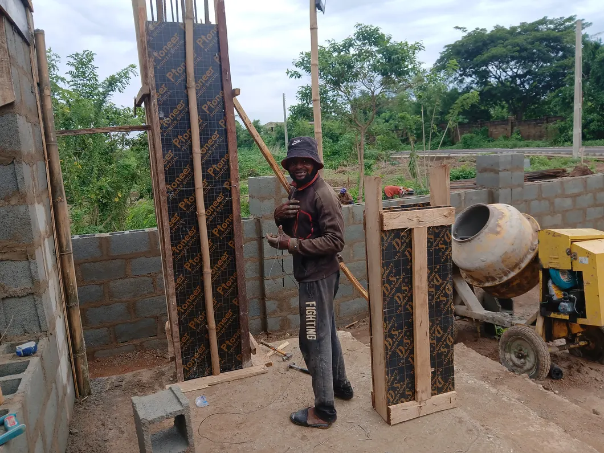
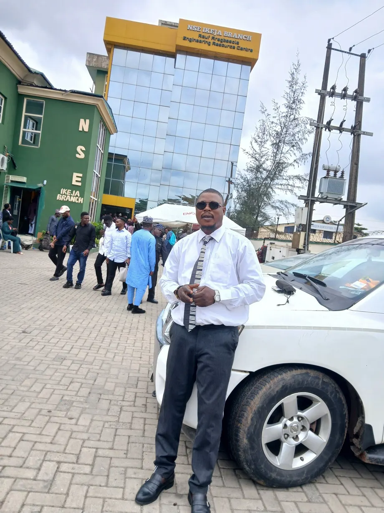

Buy a property
Tell us your preferred location, budget and property type. We can help source suitable land, houses and commercial properties for your consideration.
Find a propertyEngineering, construction & property services worldwide
TW&D builds and delivers projects for clients in Nigeria, Nigerians in the diaspora and people across every part of the world. Whether you are overseas planning a home, developing property or managing a project in Nigeria, our Ibadan-based team can coordinate professional support and discuss suitable projects internationally.

Real estate • Property acquisition • Sales
TW&D supports clients in Nigeria, the diaspora and around the world with property sourcing, sales and transaction support. We also build for clients living abroad who want to develop homes, commercial buildings or other projects in Nigeria. From plots of land to completed properties, tell us what you need and where.

Tell us your preferred location, budget and property type. We can help source suitable land, houses and commercial properties for your consideration.
Find a propertyEngage TW&D to help present and market your land, home, building or other property to prospective buyers.
Market my propertyLooking for a plot, residential home, commercial building or investment opportunity? Share your requirements and preferred area with our team.
Source a propertyEvery property enquiry is handled subject to availability, owner instructions and appropriate title and transaction checks. We do not imply that every property is already listed on our website.
Checking live totals…
Our complete capabilities
Explore the full range of TW&D services for clients across Nigeria and internationally, including Nigerians in the diaspora who want a trusted team to build or manage projects back home. Select any service to view its scope and make an enquiry.

Residential and commercial building delivery, from foundations and structural works through finishing.
Explore building construction
Site preparation, drainage, infrastructure and associated civil engineering works.
Explore civil engineering
Electrical planning and installations for buildings, facilities and project sites.
Explore electrical servicesWater supply, plumbing installations, sanitary fittings and building drainage systems.
Explore plumbing servicesTechnical planning, design coordination, project reviews and construction supervision.
Explore consultancyWe help clients source land, homes and commercial properties, and help owners market properties for sale with transaction support.
Explore property servicesGround investigation services to help inform foundation design and site development decisions.
Explore geotechnical surveyBorehole drilling and water-supply solutions for homes, businesses and project sites.
Explore borehole drillingSolar PV, inverter, battery storage, hybrid and off-grid system assessment and installation.
Explore solar power solutionsA closer look at our work
Explore published project photographs and design highlights. Images glide into view with a soft shimmer—select any image to enlarge and download it.
Loading TW&D gallery photographs…
Preparing gallery…
Contact TW&D
Wherever you are in the world, you can work with TW&D. We welcome enquiries from Nigerians in the diaspora and international clients seeking construction, property, engineering or project support in Nigeria and on suitable projects worldwide.